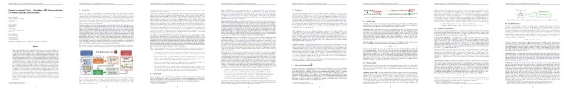

Despite their capabilities, Large Language Models (LLMs) remain opaque with limited understanding of their internal representations. Current interpretability methods either focus on input-oriented feature extraction, such as supervised probes and Sparse Autoencoders (SAEs), or on output distribution inspection, such as logit-oriented approaches. A full understanding of LLM vector spaces, however, requires integrating both perspectives, something existing approaches struggle with due to constraints on latent feature definitions. We introduce the *Hyperdimensional Probe*, a hybrid supervised probe that combines symbolic representations with neural probing. Leveraging Vector Symbolic Architectures (VSAs) and hypervector algebra, it unifies prior methods: the top-down interpretability of supervised probes, SAE’s sparsity-driven proxy space, and output-oriented logit investigation. By combining the supervised learning paradigm of traditional probes with the dictionary-based representation principle of SAEs, our approach enables deeper input-focused feature extraction while supporting output-oriented analysis. Our experiments demonstrate that our approach consistently extracts meaningful semantic information across different LLMs, embedding sizes, and configurations, uncovering concept-oriented insights into LLM inference across two distinct scenarios: input-completion tasks and QA-focused text generation. VSA-based probing overcomes the limitations of logit-based analyses, which are constrained by the model’s token vocabulary, while also mitigating the noisier interpretability outcomes often produced by SAEs in settings with a bounded conceptual feature space. By supporting a joint investigation of input-output features, this work1 advances the semantic understanding of neural representations while unifying the complementary perspectives of prior methods